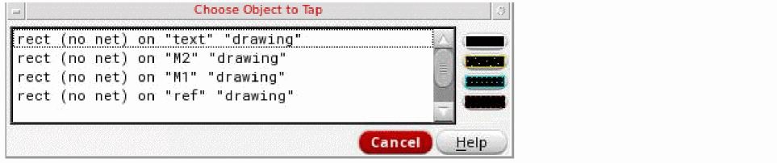
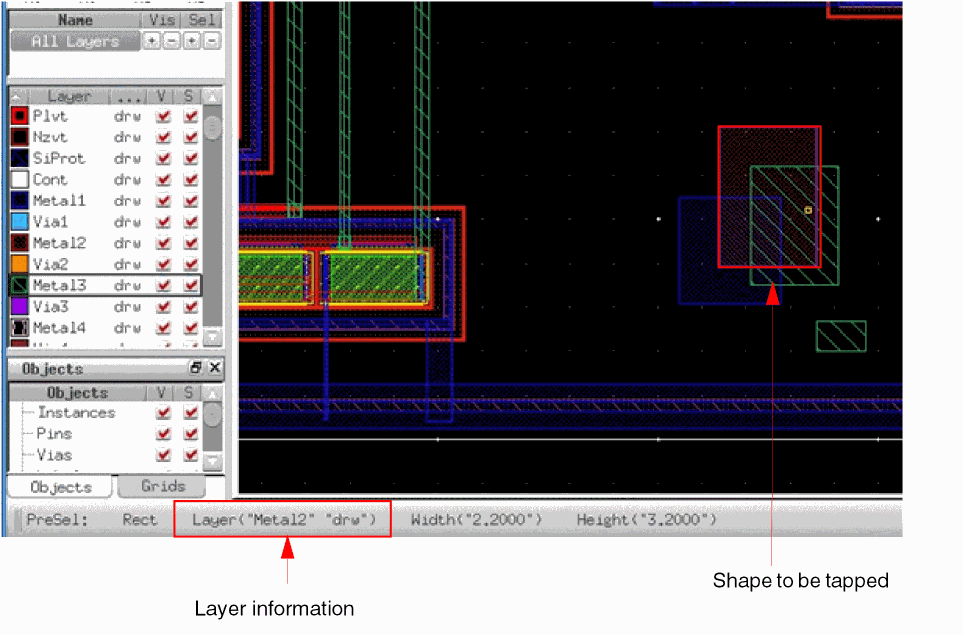

Customizing Tap Settings Using the Layout Editor Options Form
You can customize the settings for tapping objects by using the Tap section of the Layout Editor Options form. For example, you can enable auto tapping and specify the purposes to be tapped.
You can auto tap wires and shapes. When tapping a wire or path, you can tap the layer-purpose pair, extension type, wire width, net name, and constraint group. Wire Auto Tap, Shape Auto Tap, and Tap Purpose List are automatic during the creation of certain objects when these Tap fields are selected in the Layout Editor Options form. They are used during certain create commands when you want to automatically tap an existing object that is located at the first point of your new object.
By default, the drawing layer purpose is tapped. To tap specific layer purposes, you can define a prioritized list in the Tap Purpose List field. For example, consider that the following valid layer-purpose pairs exist in the technology file: metal1 drawing, metal1 pin, metal2 pin, and metal2 net. If Tap Purpose List is set to drawing net:
-
The default purpose for
metal1isdrawing, based on the ordered list of specified purposes, and formetal2isnet. -
Tapping an object on the LPP
metal1netchanges the active layer tometal1netbecausenetis specified in Tap Purpose List. -
Tapping an object on the LPP
metal1pinchanges the active layer tometal1drawing. This is becausepinis not specified in Tap Purpose List, so the default purpose formetal1is used. -
Tapping an object on the LPP
metal2pinchanges the active layer tometal2net. This is becausepinis not specified in Tap Purpose List, so the default purpose formetal2is used.
You can also define layer purposes by using the useTapPurposeList and tapPurposeList environment variables.
To customize the settings for tapping objects:
-
In the layout window, choose Options – Editor.
The Layout Editor Options form opens. You can define the settings in the Tap section of the form. -
Specify Auto Tap settings.
- Select Shape to enable auto tap for rectangles, polygons, paths, circles, ellipses, and donuts.
- Select Wire to enable auto tap for wires.
If Auto Tap is selected, a No Tap button is available on the Choose Object to Tap form to select objects where theTapcommand should not be performed. -
In Tap Purpose List, specify layer purposes if you want to tap specific layer purposes. The default purpose is
drawing. -
Select the Select from Overlaps check box if you want the Choose Object to Tap form to appear if the clicked point has overlapping objects.
The following image shows a sample Choose Object to Tap form.
If Select from Overlaps is disabled, the object with an edge closest to the selected point is tapped. Also, the shape to be tapped is highlighted. You can use the spacebar to toggle the highlight for shapes under the pointer. The layer information of the shape is displayed on the Selection toolbar.
 - Click OK.
Related Topics
Tapping Objects Using the Tap Command
Return to top